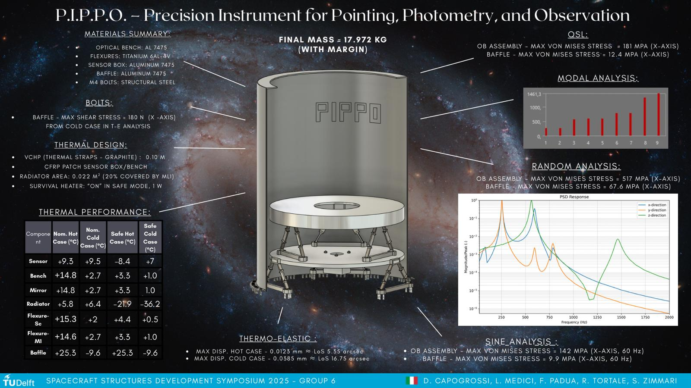

TU Delft · Spacecraft Structures Development · Apr–Jun 2025
P.I.P.P.O. — Precision Instrument for Pointing, Photometry and Observation
Thermal Engineer
Design of an optical telescope for an Earth-observation satellite, taken from materials selection to structural and thermal verification.
- Designed the thermal interface, combining passive and active heat transfer, and analysed it against the mission requirements in four cases: nominal and safe mode, hot and cold.
- Thermal hardware: VCHP (graphite thermal straps, 0.10 m), a CFRP patch between sensor box and optical bench, a 0.022 m² radiator (20% covered by MLI) and a 1 W survival heater switched on in safe mode.
- Provided the temperature maps from the thermal analysis as input to the team's thermo-elastic analysis, which gave the line-of-sight shifts in the hot and cold cases.
Team result
- Materials: aluminium 7475 for the optical bench, sensor box and baffle; Ti-6Al-4V flexures.
- Verified with quasi-static, modal, sine, random and thermo-elastic analyses.
17.97 kgfinal mass, margin included
5.35″thermo-elastic line-of-sight shift, hot case
16.75″thermo-elastic line-of-sight shift, cold case
Team: D. Capogrossi, L. Medici, F. Padua, R. Tortale, S. Zimmari.